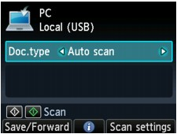
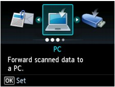
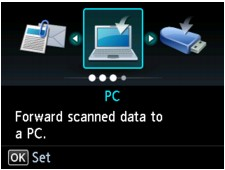

You can forward the scanned data to the computer using the Operation Panel of the machine.
Before forwarding scanned data to the computer, confirm the following:
-
The necessary application software (MP Drivers and MP Navigator EX) is installed.
If the application software (MP Drivers and MP Navigator EX) is not yet installed, insert the Setup CD-ROM into the computer's disc drive, then perform Custom Install and select MP Drivers and MP Navigator EX to install.
-
The machine is connected to a computer correctly.
Make sure that the machine is connected to the computer correctly.
Do not plug in or unplug the USB cable or LAN cable when scanning images with the machine, or when the computer is in the sleep or standby mode.
If you perform scanning via a network connection, make sure that all the required settings have been specified. For details, refer to Network Scan Settings.
-
The destination and the file name are specified in MP Navigator EX.
You can specify the destination and the file name in MP Navigator EX. For details on how to perform settings or the initial settings, refer to Scanner Button Settings Tab (Save to PC).
-
Make sure that the machine is turned on.
-
Press the SCAN button.
- If you forward the data to the USB-connected computer:
-
The Scan standby screen is displayed.
-
Go to step 3.
-
If the screen for selecting to which you save the data is displayed, select PC and press the OK button, then select Local (USB) and press the OK button. The screen for selecting to which you save the data is displayed.
- If you forward the data to the network-connected computer:
-
The screen for selecting to which you save the data is displayed.
-
If the Scan standby screen for forwarding the data to the USB-connected computer is displayed on the LCD, press the left Function button to display the screen for selecting to which you save the data.
-
Select the computer to forward the scanned data following the procedure below.
 NoteNote
NoteNote-
Select PC, then press the OK button.
-
Use the

 button to select the computer to forward the scanned data, then press the OK button.
button to select the computer to forward the scanned data, then press the OK button.The Scan standby screen is displayed.
Note-
If you select Local (USB) on the Select PC screen, the data is forwarded to the USB-connected computer.
If you press the left Function button, the machine starts searching for the connected computers again.
-
-
Use the

 button to select the document type for Doc.type.
button to select the document type for Doc.type.- Auto scan
-
This item is available only when the machine is connected to the computer using a USB cable.
-
The machine detects the type of the originals automatically and the image is forwarded in the optimized size, resolution and data format.
-
Scanning via a network is not available.
-
Load originals properly according to their type; otherwise, some originals may not be scanned properly.
Refer to Placing Documents for how to load the original on the Platen Glass.
-
The following items can be scanned:
Photos, postcards, visiting cards, magazines, newspapers, documents, BD/DVD/CDs -
The following items cannot be scanned properly.
-
A4 sized photos
-
Documents smaller than 5 inches x 7 inches (127 mm x 178 mm) such as a paperback with its backbone cut off
-
Originals on thin white paper
-
Long and narrow originals such as panoramic photographs
-
-
When you scan originals from the ADF, it may take longer to scan the first page.
- Document
-
Scans the original on the Platen Glass or in the ADF applying the optimized settings for scanning a document.
- Photo
-
Scans the original on the Platen Glass applying the optimized settings for scanning a photo.
 Important
Important -
Press the right Function button to adjust the settings as necessary.
-
Load the original document on the Platen Glass or in the ADF.
Note-
Refer to Placing Documents for how to load the original.
-
You can confirm the procedure to load the original by pressing the center Function button.
-
-
Press the Color button for color scanning, or the Black button for black & white scanning.
-
If you load the original in the ADF:
The machine starts scanning and scanned data is forwarded to the computer.
-
If you load the original on the Platen Glass:
-
When you select other than PDF or Compact PDF for Format on the scan setting screen, the machine starts scanning and scanned data is forwarded to the computer.
-
When you select PDF or Compact PDF for Format on the scan setting screen, the confirmation screen asking you if you continue scanning is displayed after scanning is complete.
If you continue scanning, load the original on the Platen Glass and start scanning.
If you do not continue scanning, press the left Function button. The scanned data is forwarded to the computer.
-
Scanned data is forwarded to the computer according to the settings specified in MP Navigator EX.
Remove the original on the Platen Glass or from the Document Output Slot after scanning is complete.
Important-
If the scanning result with Auto scan is not satisfactory, select Document or Photo according to the original in step 3, then specify the scan size or other setting items in step 4.
-
If you want to scan originals with advanced settings, or if you want to edit or print the scanned images:
If you scan originals from a computer using MP Navigator EX, MP Navigator EX enables you to edit the scanned images, such as optimizing or trimming.
In addition, you can edit or print the scanned images using the bundled application software to make better use of them.